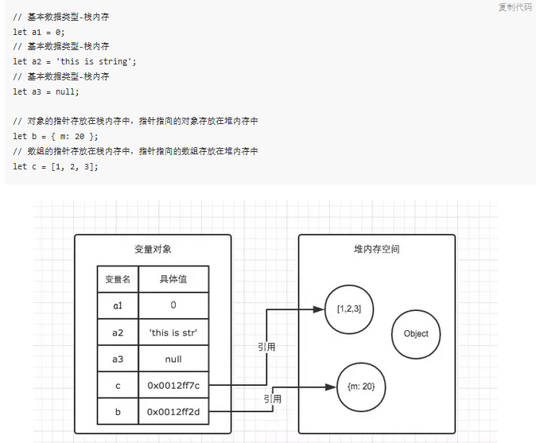
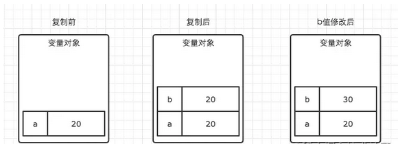
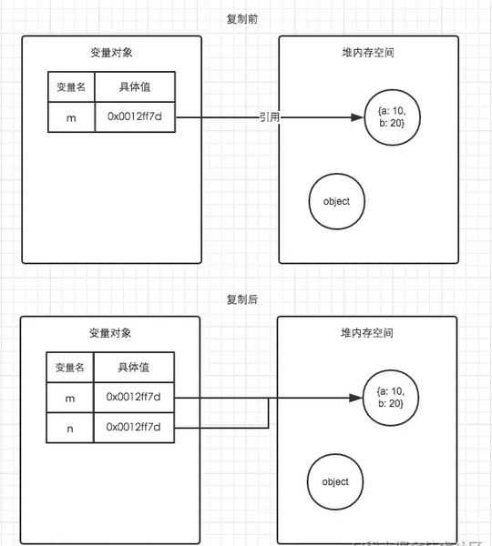
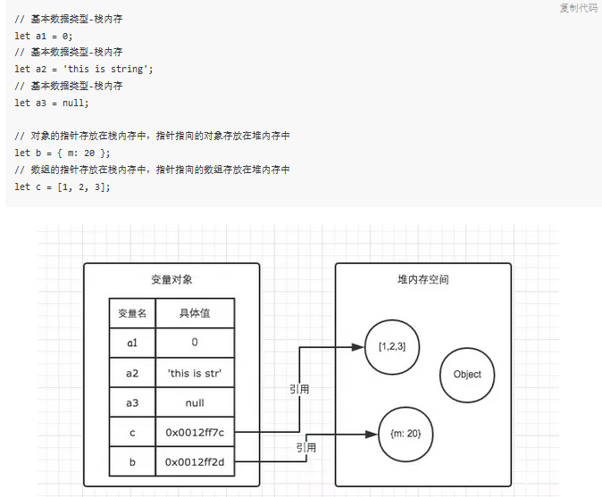
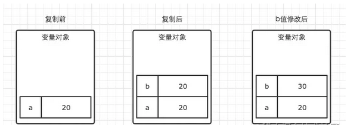
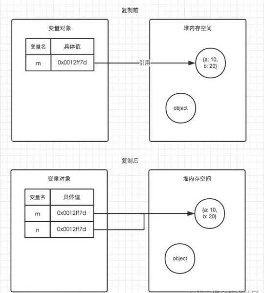

1.js变量概述
变量是存储数据(信息)的命名容器。与代数一样,JavaScridivt 变量可用于存放值(比如 x=2)和表达式(比如 z=x+y)。
变量可以使用短名称(比如 x 和 y),也可以使用描述性更好的名称即语义化(比如 age, sum, totalvolume)。
变量命名遵循js标识符的命名规则:如果命名包括多个单词,通常采用小驼峰式命名法(camelCase)
变量必须以字母开头
变量也能以 $ 和 _ 符号开头(不推荐这么做)
变量名称对大小写敏感即严格区分大小写(y 和 Y 是不同的变量)
变量不能是关键字和保留字
js变量是松散类型的,所以可以不用预先声明指定变量是保存什么类型数据的,重复声明后面的会覆盖前面的,在程序执行时会自动判断类型。
2.js变量的声明语法
在JavaScript中有3个关键字可以用来声明变量:var、let、const,其中var是所有版本都可以使用,而let和const只能在es6及更晚的版本中使用。
语法都是: var/let/const 变量名1,变量名2,... = 任意数据类型的数据值; 注意：为了更好的可读性，请一行只声明一个变量。
语法都是: var/let/const 变量名1,变量名2,... = 任意数据类型的数据值; 注意：为了更好的可读性，请一行只声明一个变量。
1.var声明
特点:
1、var 声明变量不初始化时值为 undefined。
2、var 可以对同一个变量重复声明,后面的会覆盖前面的。
3、var 在全局声明的变量是全局作用域变成window对象的属性、在函数体内声明的变量具有函数作用域,没有块级作用域。
4、var 声明变量时存在变量提升,浏览器在预解析时会将所有变量声明放到最前面这也就是变量的提升(hoist)。
5、for循环中使用var定义的迭代变量会渗透到循环体外部,这时迭代变量保存的是导致循环退出的值。
1、var 声明变量不初始化时值为 undefined。
2、var 可以对同一个变量重复声明,后面的会覆盖前面的。
3、var 在全局声明的变量是全局作用域变成window对象的属性、在函数体内声明的变量具有函数作用域,没有块级作用域。
4、var 声明变量时存在变量提升,浏览器在预解析时会将所有变量声明放到最前面这也就是变量的提升(hoist)。
5、for循环中使用var定义的迭代变量会渗透到循环体外部,这时迭代变量保存的是导致循环退出的值。
2.let声明
let和var的作用是差不多的,就是用来替代var的。
特点:
1、let 声明变量不初始化时值也是 undefined。
2、let 不允许在相同作用域内(即同一个花括号内)重复声明同一个变量。
3、let 声明变量是块级作用域。
4、let 声明变量不存在变量提升,所声明的变量一定要在声明后使用否则报错。
5、let 声明变量存在临时性死区(暂时性死区temporal dead zone)TDZ。即:ES6 明确规定,如果块级作用域中存在let和const命令,这个块级作用域对这些命令声明的变量,从一开始就形成了封闭作用域。 凡是想在声明语句之前就使用这些变量,就会报错。也就是说在一个块级作用域(花括号内),使用let和const声明的变量不能在声明之前使用。 这是因为let和const声明的变量不存在变量提升。所以在声明语句出现之前,都属于变量的“死区”。这在语法上,称为“暂时性死区”(temporal dead zone,简称 TDZ)。
6、for循环中使用let定义的迭代变量不会有问题,这是因为JavaScript引擎在每次迭代循环时都声明一个新的迭代变量。
特点:
1、let 声明变量不初始化时值也是 undefined。
2、let 不允许在相同作用域内(即同一个花括号内)重复声明同一个变量。
3、let 声明变量是块级作用域。
4、let 声明变量不存在变量提升,所声明的变量一定要在声明后使用否则报错。
5、let 声明变量存在临时性死区(暂时性死区temporal dead zone)TDZ。即:ES6 明确规定,如果块级作用域中存在let和const命令,这个块级作用域对这些命令声明的变量,从一开始就形成了封闭作用域。 凡是想在声明语句之前就使用这些变量,就会报错。也就是说在一个块级作用域(花括号内),使用let和const声明的变量不能在声明之前使用。 这是因为let和const声明的变量不存在变量提升。所以在声明语句出现之前,都属于变量的“死区”。这在语法上,称为“暂时性死区”(temporal dead zone,简称 TDZ)。
6、for循环中使用let定义的迭代变量不会有问题,这是因为JavaScript引擎在每次迭代循环时都声明一个新的迭代变量。
3.const声明
const行为和let基本一样,唯一一个区别在于const声明变量时必须同时初始化变量,且初始化后不能修改值。
本质上 const 其实保证的不是变量的值不变,而是保证变量指向的内存地址值不允许改动。
4.声明风格及最佳实践
1.不再使用var。
2.优先使用const,只在提前知道未来会修改时再用let。这是因为使用const声明可以让浏览器运行时强制保持变量不变,同时也可以让静态代码分析工具提前发现不合法的赋值操作。
2.优先使用const,只在提前知道未来会修改时再用let。这是因为使用const声明可以让浏览器运行时强制保持变量不变,同时也可以让静态代码分析工具提前发现不合法的赋值操作。
3.变量的存储空间
我们知道变量其实就是一个起了名字的盒子，这个盒子内保存的是一个值。基本类型是本身、引用类型是引用地址。
而js变量是参考了Java语法的,也将这个值分为两种类型原始值和引用值,它们实际都是存储在计算机内存空间里的。
区别是:
保存原始值(primitive value)的变量是存放在栈(stack)内存中,同时是按值(by value)访问的,操作的就是实际值。 原始值包含7种js数据类型:undefined、null、boolean、number、string、bigint、symbol。
保存引用值(reference value)的变量实际值存放在堆(heap)内存中,这是因为JavaScript是不允许直接访问内存位置的。 所以是不能直接操作对象所在的堆内存空间的,而是通过对该对象的引用(reference)而非实际的对象本身。 因此当我们要访问堆内存中的引用数据类型时,实际上我们首先是从变量中获取了该对象的地址指针(它是存在栈内存中的), 然后再从堆内存中取得我们需要的数据。 引用值在变量保存之后可以随时添加、修改、删除自己的属性和方法。

复制值时:
原始值是从栈内存中复制一份新的实际值给新变量,操作新变量不会影响原变量,它两互相独立互不干扰。

引用值是复制栈内存中的引用地址,所以新变量和旧变量指向的是同一个堆内存中的对象。无论谁修改都会改变实际值。

函数传递参数时:
记住ECMAScript中所有的函数的参数都是函数内部的局部变量也都是按值传递的,也就是说实参传进来时是复制一份给到函数内部的形参。
原始值就跟原始值变量的复制一样,引用值就跟引用值变量的复制一样。其实就都是值,不过一个是实际值一个是引用地址值都是值,都是栈内存中的值复制一份给到形参。
区别是:
保存原始值(primitive value)的变量是存放在栈(stack)内存中,同时是按值(by value)访问的,操作的就是实际值。 原始值包含7种js数据类型:undefined、null、boolean、number、string、bigint、symbol。
保存引用值(reference value)的变量实际值存放在堆(heap)内存中,这是因为JavaScript是不允许直接访问内存位置的。 所以是不能直接操作对象所在的堆内存空间的,而是通过对该对象的引用(reference)而非实际的对象本身。 因此当我们要访问堆内存中的引用数据类型时,实际上我们首先是从变量中获取了该对象的地址指针(它是存在栈内存中的), 然后再从堆内存中取得我们需要的数据。 引用值在变量保存之后可以随时添加、修改、删除自己的属性和方法。

复制值时:
原始值是从栈内存中复制一份新的实际值给新变量,操作新变量不会影响原变量,它两互相独立互不干扰。

引用值是复制栈内存中的引用地址,所以新变量和旧变量指向的是同一个堆内存中的对象。无论谁修改都会改变实际值。

函数传递参数时:
记住ECMAScript中所有的函数的参数都是函数内部的局部变量也都是按值传递的,也就是说实参传进来时是复制一份给到函数内部的形参。
原始值就跟原始值变量的复制一样,引用值就跟引用值变量的复制一样。其实就都是值,不过一个是实际值一个是引用地址值都是值,都是栈内存中的值复制一份给到形参。